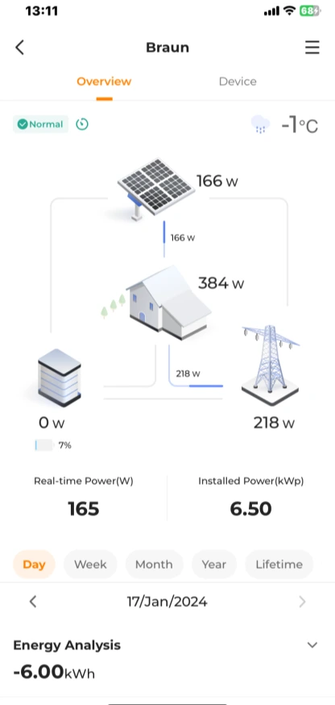
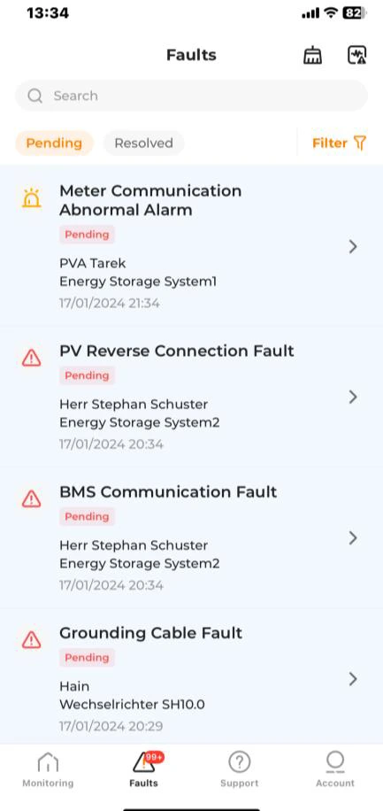
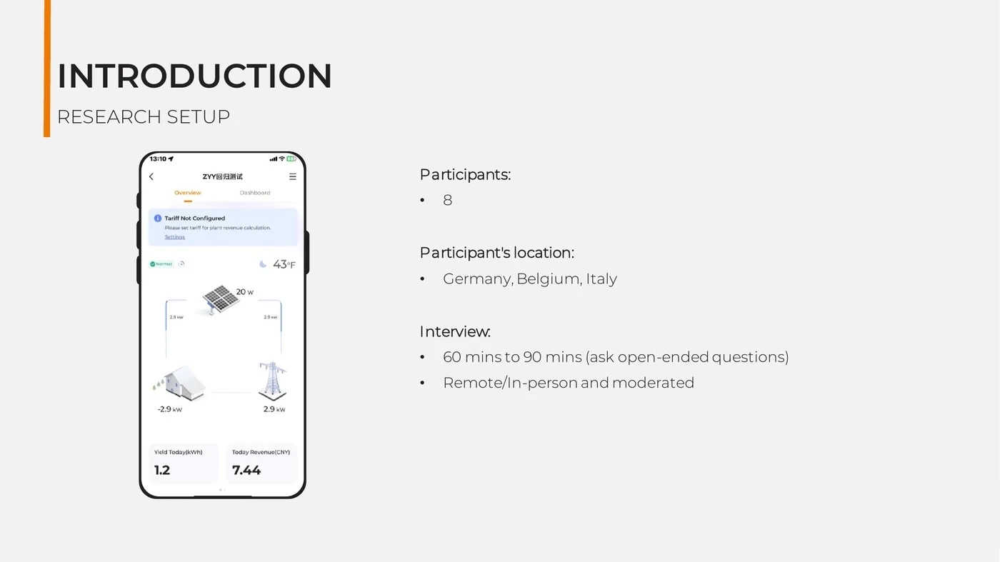
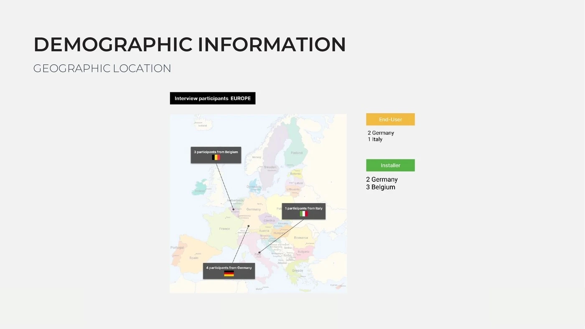
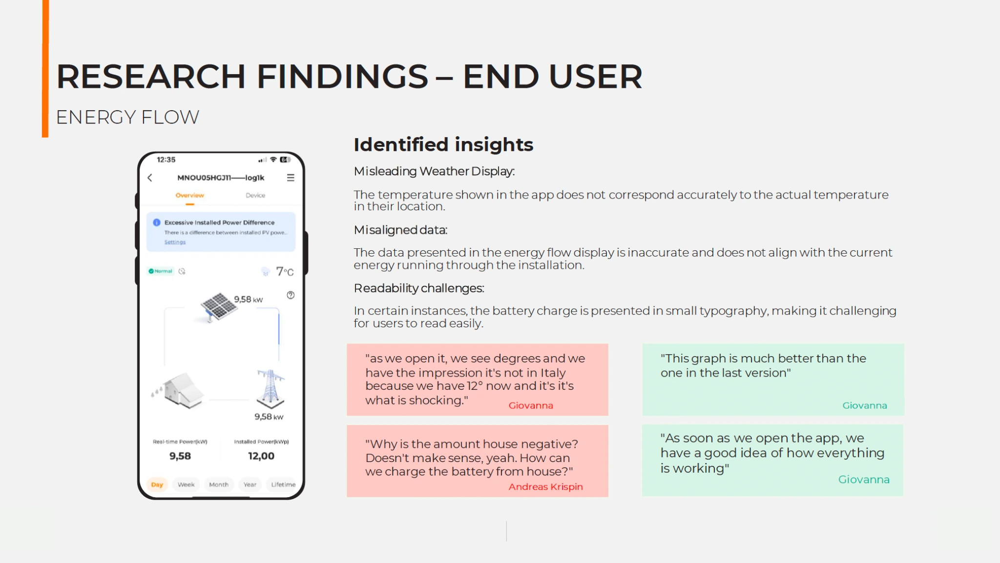
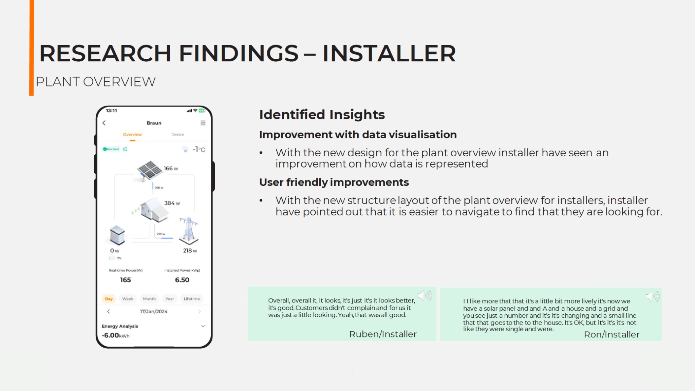
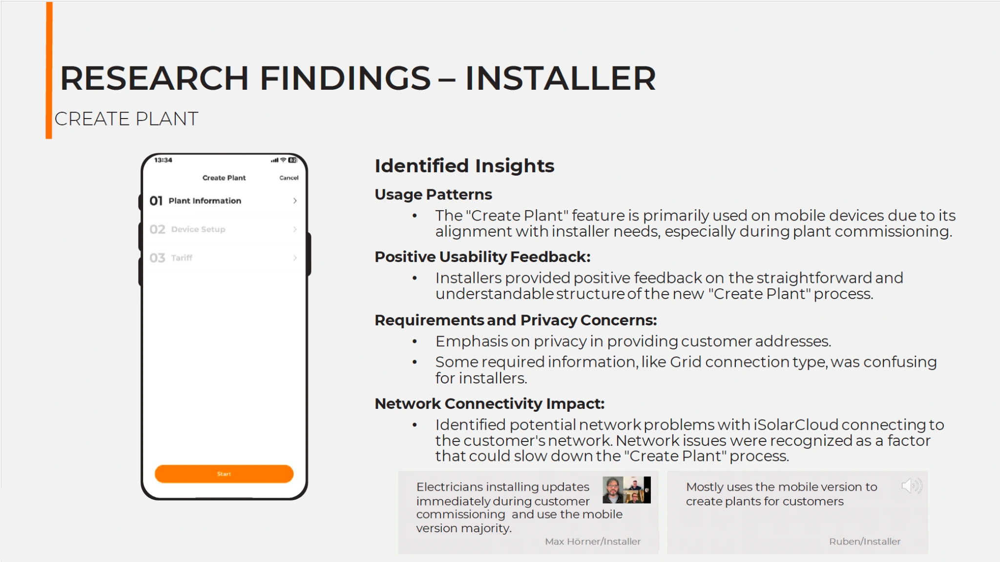
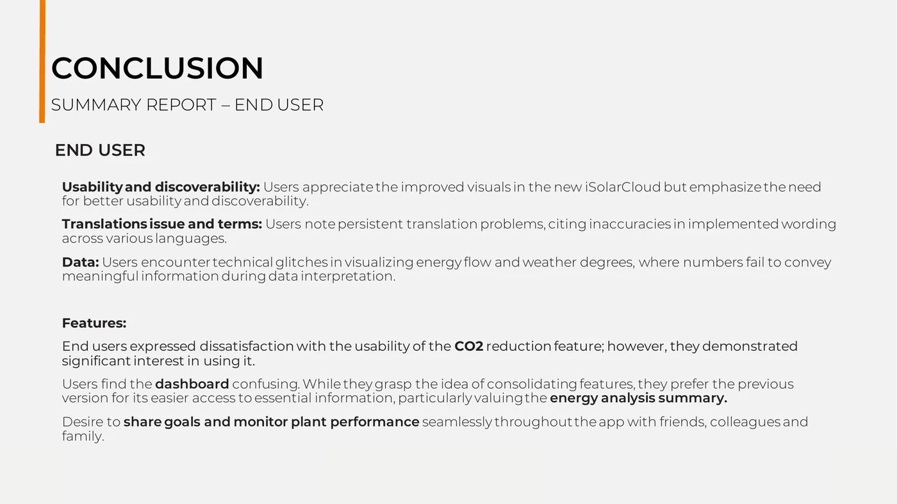

Primary moderator during participant sessions
Evaluative UX research · Product iteration · Collaboration
Evaluating the iSolarCloud mobile redesign
How Maria Ciccarelli and I tested a live redesign with European installers and homeowners, identified what was working and translated the findings into priorities for ongoing product updates.


Moderated evaluation8 participants · 3 markets
Research outcomeEvidence for ongoing iteration
Project snapshot
Testing a live product, not validating a visual preference
Shared planning, analysis, prioritisation and reporting
Installers and homeowners across three European markets
Findings informed improvements across subsequent mobile updates
Why we ran the study
The redesign looked different. We needed to know whether it worked better.
The mobile redesign had introduced a new visual language and reorganised important monitoring and commissioning features. Our task was to evaluate satisfaction, uncover usability issues and understand which features different users actually relied on.
Identify the features that mattered in real homeowner and installer workflows.
Find issues with data, discoverability, terminology and task completion.
Separate successful redesign decisions from areas needing further iteration.
A redesign succeeds when users can trust the information and complete the task—not only when the interface looks cleaner.
How we worked together
Two research roles, one shared analysis
Stay present with the participant
I led the conversation, asked open-ended and follow-up questions, explored contradictions and kept the session aligned with the research goals.
+
Protect the detail
Maria documented responses, tracked topics that needed clarification and made sure valuable evidence was captured while I focused on the participant.
Research setup
Comparing two user roles across three European markets
We used moderated, open-ended interviews to understand behaviour, satisfaction and product expectations—not only to collect reactions to individual screens.
Two participants in Germany and one in Italy, focused on monitoring, energy understanding and everyday value.
Two participants in Germany and three in Belgium, focused on commissioning, diagnostics and customer support.
Moderated sessions
→Observation notes
→Joint synthesis
→Iteration priorities
Original report artefacts
The study setup and participant coverage
These two artefacts show how the study was structured and how the participant sample was distributed across the three European markets.

Study designResearch setup
Eight participants joined moderated sessions lasting 60–90 minutes, conducted remotely and in person.

Sample distributionEuropean coverage
The study included homeowners and installers located in Germany, Belgium and Italy.
Different definitions of value
Homeowners monitored confidence. Installers managed work.
“Is my system working, and what value am I getting?”
Energy FlowDashboardEnergy analysisCO₂ reductionEV charging
“Can I commission, diagnose and support the customer efficiently?”
Plant OverviewCreate PlantFaultsTariff setupTechnical access
What the redesign improved
Users recognised meaningful progress
A balanced evaluation needed to protect the design decisions that were already working—not only produce a list of problems.
Energy Flow felt clearer
Some homeowners felt the redesigned visualisation gave them a better first impression of system activity than the previous version.
Plant Overview was easier to navigate
Installers responded positively to the new structure and the way production data was represented.
Create Plant supported on-site work
The mobile flow aligned with commissioning behaviour and was described as straightforward and understandable.
Eco charging matched a real goal
Solar-first EV charging supported users who were flexible and primarily motivated by cost savings.

Homeowner findingsEnergy Flow feedback
The report captured both positive reactions to the clearer visualisation and concerns about weather accuracy, misleading values and readability.

Installer findingsPlant Overview feedback
Installers responded positively to the improved structure and data visualisation, especially when checking plant status during support and commissioning work.
Where trust still broke down
Visual improvement could not compensate for unclear or unreliable information
Data trust
Incorrect weather values and energy-flow data made users question whether the system reflected reality.
- Location mismatch
- Unexpected negative values
- Small battery information
Information relevance
Some dashboard content did not match what users wanted to monitor or required extra effort to find.
- Low-value widgets
- Technical users bypassing the dashboard
- Need for personalisation
Feature meaning
CO₂ goals, percentages and calculation methods were difficult to understand despite user interest in the topic.
- Ambiguous setup
- Unclear graph
- Missing calculation logic
European localisation
A single tariff input could not support different countries, providers and dynamic pricing models.
- Placeholder values
- Misleading earnings
- Country-specific requirements
A role-specific insight
Mobile and web served different moments in the installer workflow
Installers did not need every professional task to move into the mobile product. The research clarified where each platform was most useful.
Fast access during commissioning, customer visits and remote status checks.
↔
More space, functionality and technical context when diagnosing complex issues.

Good omnichannel design does not force feature parity. It supports the right task in the right context.
From evidence to iteration
Preserve the progress. Fix the trust gaps.
Outcome
Research that continued to inform the product
The study became an input for ongoing iteration of the iSolarCloud mobile redesign. Findings around data accuracy, dashboard relevance, CO₂ clarity, tariff configuration, installer workflows and discoverability were carried into later design discussions and product updates.
Rather than acting as a one-time validation exercise, the research created an evidence base for deciding what should be preserved and what needed further refinement.
01Role-specific feature priorities02Positive patterns worth preserving03Trust and localisation gaps04Priorities for future iterations05Evidence for mobile product updates

Reflection
A cleaner interface is only the beginning
This project reinforced that visual quality and usability are related, but they are not the same. Users can appreciate a more modern interface while still losing trust when data is wrong, terms are unclear or the information does not fit their goal.
It also showed the value of a strong research partnership. Moderating allowed me to stay fully engaged with each participant, while Maria’s observation protected the details. Joint synthesis gave the findings more depth than either of us working alone.
Evaluate the experience users actually have—not the design the team intended to create.